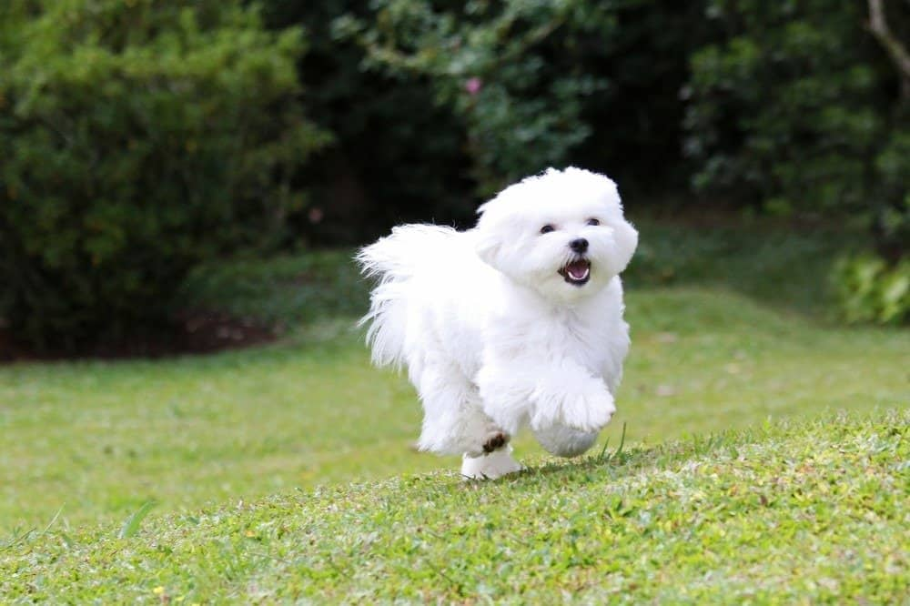
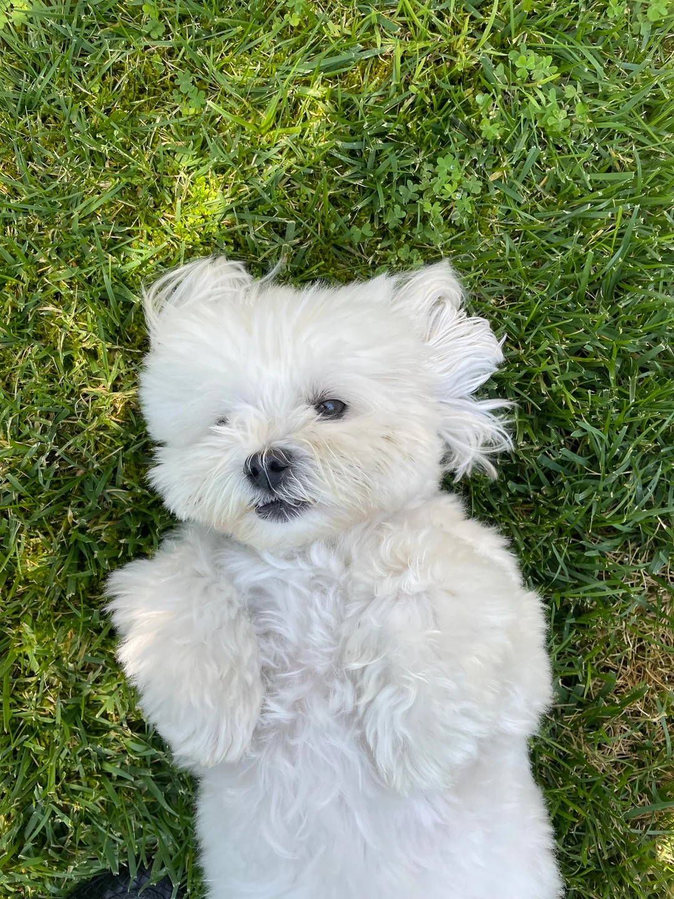

https://cafe.daum.net/subdued20club/ReHf/5750266?svc=cafeapi


말티즈가 사냥도 양치기도 경비도
길찾기도 안한 개인데도
여태까지 품종이 이어진 이유
살아있는 온수주머니였단거ㅋㅋㅋㅋㅋㅋㅋㅋ
배 아플때 배 위에 올려두면 따뜻해서 낫는다는 옛 기록도 있음
개라는 동물 자체가 인간이랑 가장 가까운 동물인데
그 중에서도 인간과 가장 가까운 애들이었음
https://cafe.daum.net/subdued20club/ReHf/5750266?svc=cafeapi


말티즈가 사냥도 양치기도 경비도
길찾기도 안한 개인데도
여태까지 품종이 이어진 이유
살아있는 온수주머니였단거ㅋㅋㅋㅋㅋㅋㅋㅋ
배 아플때 배 위에 올려두면 따뜻해서 낫는다는 옛 기록도 있음
개라는 동물 자체가 인간이랑 가장 가까운 동물인데
그 중에서도 인간과 가장 가까운 애들이었음
뭔소리야 ‘기여우니까’

어림없지 귀만 남기고 반삭미용!!
환희 귀여워
얘 털도 안 빠짐
가깝...다기엔 겁나 사나움
무리 서열내에서 자기보다 밑이면 얄짤없어서 그럼

치와와 이넘은 배위에두면 할퀴고 물어버리는데 어케 살아남은겨.
예?
귀엽게 생긴거랑 다르게 지랄 맞은 새끼.. 근데 지랄 맞은 것도 나름 귀여워서 장난치다보면 진짜 지랄견인 새끼.. 그런데도 귀여운 새끼.. 씹티즈..
배타는 쥐사냥개인줄 알았는데
귀여우니까.... 진짜귀여우니까...
배탈때 쥐잡이용 개라던데
웹툰 개같이 탈출
개추 한다 말티즈가 주인공임
오랫만에 재미 있게 빠져봄
출처가 해연갤 여시 이지랄이라 못믿겠는데
흰둥이
괴롭히기 재미 1황
말티즈, 푸들이 애견 탑인건
그냥 털 잘 안빠지고 기름 안흘려서로 암
애들도 빠진다고 대꾸할 사람들은 다른 개들은 털갈이를 한다는걸 모르는거다.
애내들이 털이안빠지는대신 털이 ㅈㄴ잘자람… 털빠지는애들은 털갈이덕에 미용할필요가없는데
털안빠지는애들은 털이그대로 자라서 미용값든다
근데 말티즈 키우는 유튜버들 보면 성깔이 다 지랄맞던데
귀여우니까 존나 건드려가지고 점점 성격이 더러워지더라
흠..
가장 가깝다라....
씨츄가 똥만 안먹었어도
강형욱이 키우기 어려운 개 탑티어에 올려놨길래, 사람들이 ??? 했는데
로트와일러에 물려봤다는 사람, 불독에 물려봤다는 사람 몇이나 될거 같냐, 그런데 말티즈에 물려본 사람은 넉넉잡아도 수 천명은 나온다고ㅋㅋㅋㅋㅋ귀엽긴한데 진짜 얘도 다른 의미로 성격 ㅈ같긴 함
ㅈㄴ까찰함 ㄹㅇㅋㅋ
비숑이 더 그런듯..
그럼 순수 아무것도 안하고 단지 같이 놀기위해 생긴 품종이란건가
어렷을 적에 큰집에서 키우던 강아지가 말티즈여서 그런지 나는 얘가 젤 귀엽더라구..